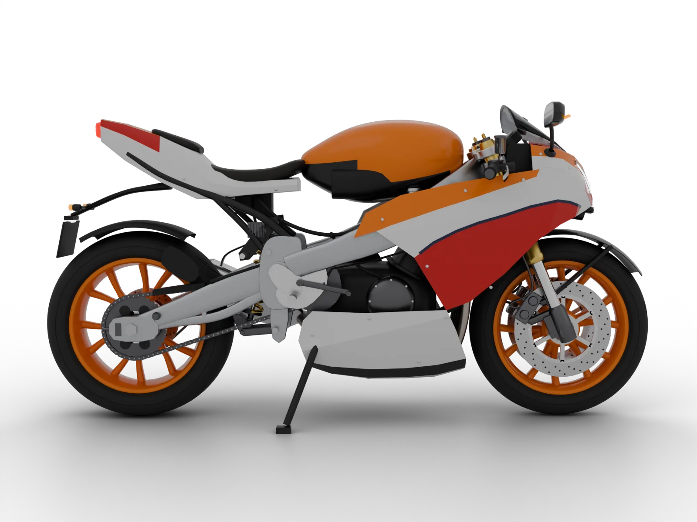
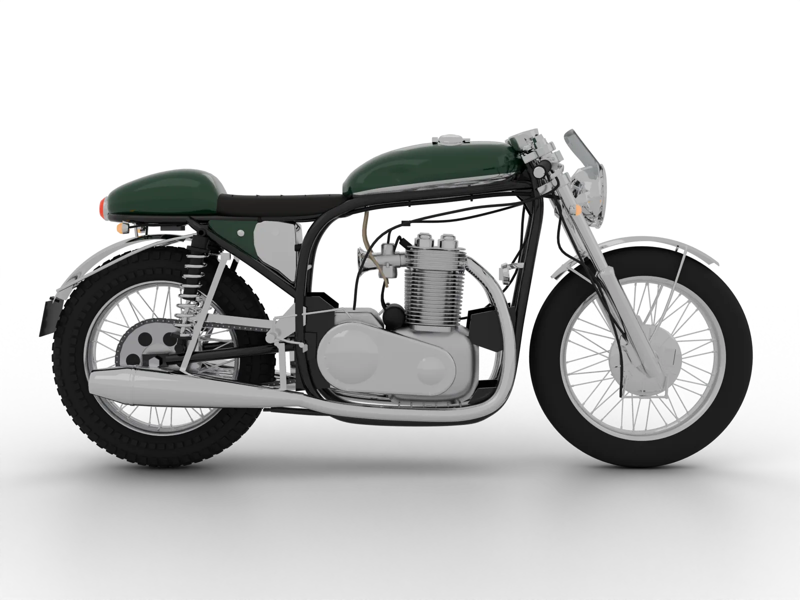

Kawasaki motorcycle repairs and problems
35 Kawasaki models with their key numbers, top repairs and the problems to check. Pick your bike.
 Kawasaki Z125StreetKawasaki Z250StreetKawasaki Z300StreetKawasaki Z400StreetKawasaki Z500StreetKawasaki Z650StreetKawasaki Z750StreetKawasaki Z800StreetKawasaki Z900StreetKawasaki Z1000StreetKawasaki Z900RSStreetKawasaki ER-5Street
Kawasaki Z125StreetKawasaki Z250StreetKawasaki Z300StreetKawasaki Z400StreetKawasaki Z500StreetKawasaki Z650StreetKawasaki Z750StreetKawasaki Z800StreetKawasaki Z900StreetKawasaki Z1000StreetKawasaki Z900RSStreetKawasaki ER-5Street
Kawasaki Ninja 250SportKawasaki Ninja 300SportKawasaki Ninja 400SportKawasaki Ninja 500SportKawasaki Ninja 650SportKawasaki Ninja ZX-4RSportKawasaki Ninja ZX-6RSportKawasaki Ninja ZX-9RSportKawasaki Ninja ZX-10RSportKawasaki Ninja H2SportKawasaki Versys 650AdventureKawasaki Versys 1000AdventureKawasaki Versys-X 300AdventureKawasaki KLE500AdventureKawasaki KLR650AdventureKawasaki KLX150AdventureKawasaki KLX230AdventureKawasaki KLX250Adventure
Kawasaki Vulcan SCruiserKawasaki VN800CruiserKawasaki VN900CruiserKawasaki VN1500CruiserKawasaki 1400GTRTouring